Adding a perspective
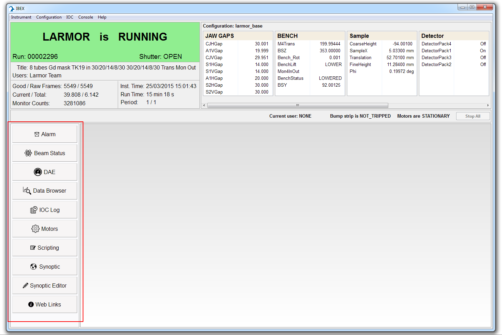
Creating a plug-in
In Eclipse, add a new UI plug-in via File->New->Other->Plug-in Development->Plug-in Project
Give it a name, for example: uk.ac.stfc.isis.ibex.ui.myperspective
Do not use the default location, instead set it to C:\Instrument\Dev\client\ISIS\base\ plus the plug-in name.
for example: C:\Instrument\Dev\ibex_gui\base\uk.ac.stfc.isis.ibex.ui.myperspective
The dialog should look like this:
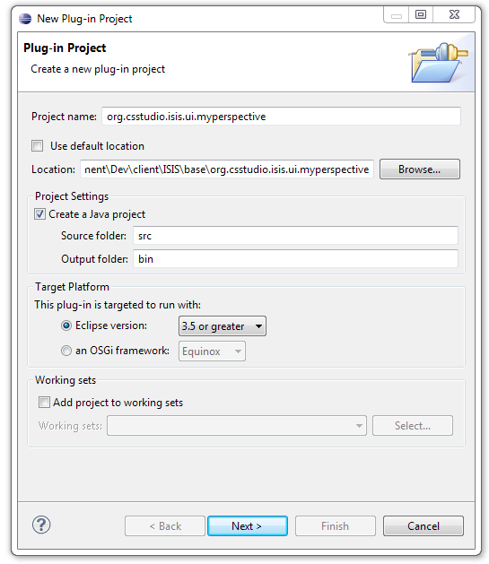
Click ‘Next’
On the next page of the dialog check it looks like the following and click ‘Finish’:
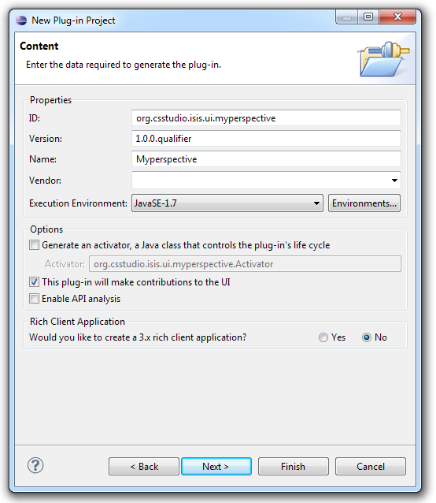
Note: Generate an activator is unchecked as generally we do not need one for UI plug-ins, but it does not really matter if there is one.
Creating a Perspective
Now the plug-in has been created:
Add a source package via File->New->Other->Java->Package
Set the source folder to the path of the source folder in the newly created plug-in
Set the name to something sensible prefixed by the plug-in name (or just the plug-in itself)
The dialog should look something like this:
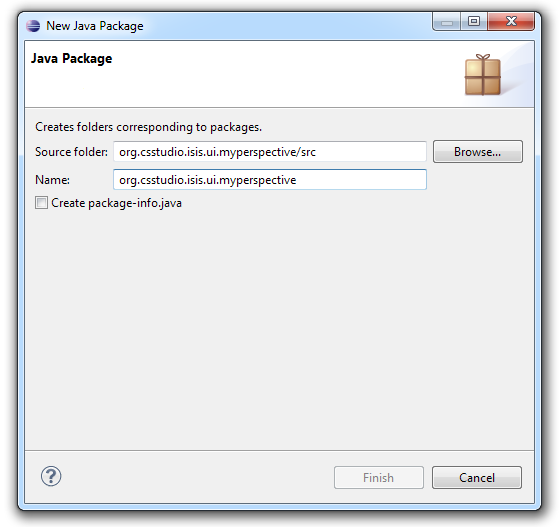
Note: Package names should be in the format of uk.ac.stfc.isis.ibex.ui.packagename, not org.csstudio.isis.ui.packagename as shown in all images.
We now need to add a Perspective class to the new package; the easiest way to do this is to copy and paste an existing one, for example: the one in uk.ac.stfc.isis.ibex.ui.scripting, and edit it.
The first thing you will notice is that there are numerous red errors.
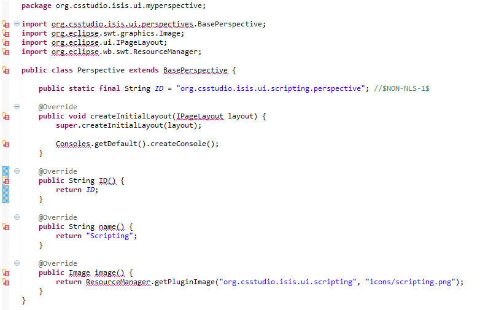
These are easily fixed:
Hover the mouse over
BasePerspectiveon thepublic class Perspectiveline and selectFix project setup...Delete the
Consoles.getDefault().createConsole();lineOpen the MANIFEST.MF file in META_INF and select the
Dependenciestab; on that tab click theAddbutton underRequired Plug-ins. From the list select uk.ac.stfc.isis.ibex.ui and clickOK. Add org.eclipse.ui and org.eclipse.core.runtime with the same method.There are likely to be other dependencies missing, fix any other errors.
Save all the changes.
The errors should now have disappeared, but there are a few more things to do:
Change the value returned by the name function to be what you want shown on the Perspective Switcher. Put an ampersand before the character that you want to use as the perspective shortcut making sure that the chosen character is not in use already. (More on this later)
Add a new icon (we will leave that as it is for now and fix it later!)
Creating a View
With the Perspective now in place we need to add a View:
Add a new class via File->New->Other->Java->Class
Make sure the Package is the same as one created earlier
Enter a sensible name
Click the ‘Browse’ button next to the Superclass and select ViewPart
The dialog should look something like this:
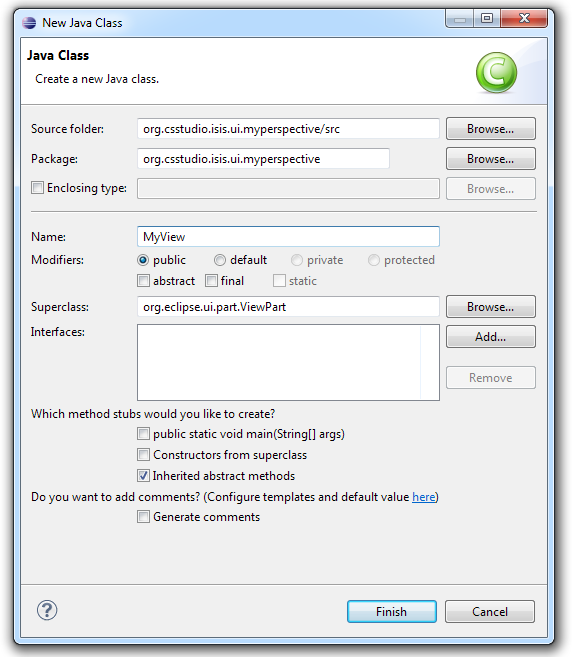
The new class file should open in the editor. For this example I am just going to add a web browser to the view:
Right-click on the View in the Package Explorer in Eclipse and select Open With->WindowBuilder Editor.
In the window that pops up select the Design tab
Select the FillLayout and click on the mock-up of the View to add it
Select the Browser control and click on the mock-up to add it
Now click on the Source tab
If the
createPartControlmethod has a Composite argument called arg0 change it to parentDelete the TODO comments
Add an ID for the View which is the full-name of the class in lower-case; for example: uk.ac.stfc.isis.ibex.ui.myperspective.myview
It should now look something like:
package uk.ac.stfc.isis.ibex.ui.myperspective;
import org.eclipse.swt.widgets.Composite;
import org.eclipse.ui.part.ViewPart;
import org.eclipse.swt.layout.FillLayout;
import org.eclipse.swt.SWT;
import org.eclipse.swt.browser.Browser;
public class MyView extends ViewPart {
public static final String ID = "uk.ac.stfc.isis.ibex.ui.myperspective.myview";
public MyView() {
}
@Override
public void createPartControl(Composite parent) {
parent.setLayout(new FillLayout(SWT.HORIZONTAL));
Browser browser = new Browser(parent, SWT.NONE);
}
@Override
public void setFocus() {
}
}
Adding the Perspective and View to the GUI
Note: The extensions are defined in XML inside plugin.xml, so example XML is included below if you would prefer to edit that directly.
Note: Sometimes Eclipse cannot find the schema for the extensions, so when trying to select, say, New->contribution contribution does not appear in the list rather it says Generic; in this case, it is necessary to edit the XML directly.
To add both the new Perspective and View to the main GUI we use extensions. First let’s add the Perspective:
Open the MANIFEST.MF file in META_INF and select the ‘Extensions’ tab, it should be empty like this:
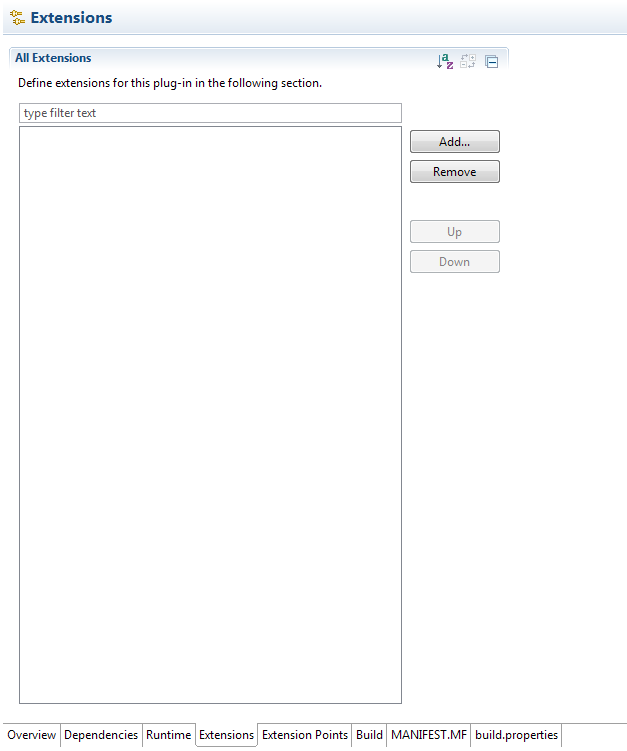
Click the ‘Add’ button and select uk.ac.stfc.isis.ibex.ui.perspectives extension point and click ‘Finish’
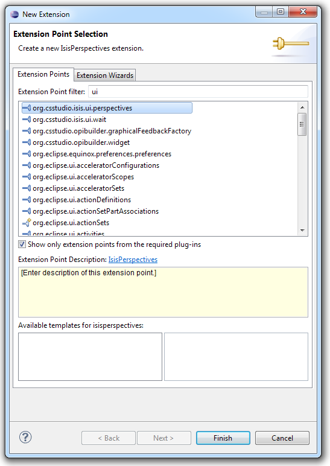
It should now look like this:
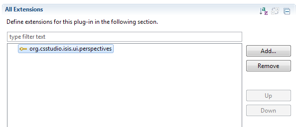
Right-click on the uk.ac.stfc.isis.ibex.ui.perspectives extension point and select New->contribution
The contribution should appear below the extension point
Using the ‘Browse’ button select the Perspective class created earlier, the screen should now look like like this:
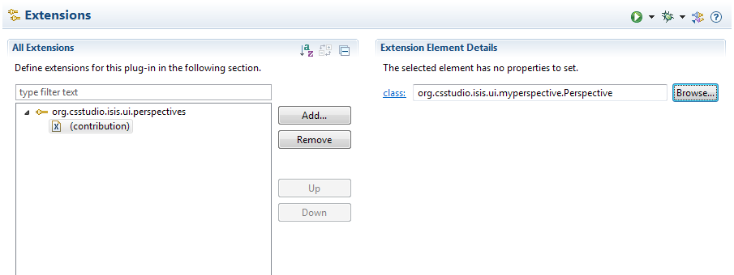
Using the ‘Add’ button as before we need to add org.eclipse.ui.perspectives extension point
Right-click on the new extension point and select New->perspective; the new perspective should appear below the extension point
Select the newly added item and fill in the required details, it should look something like this:
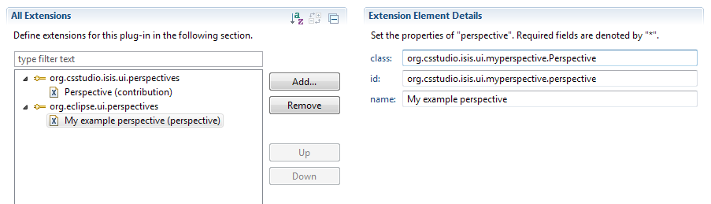
The XML in plugin.xml for what we have done so far is:
<extension
point="uk.ac.stfc.isis.ibex.ui.perspectives">
<contribution
class="uk.ac.stfc.isis.ibex.ui.myperspective.Perspective">
</contribution>
</extension>
<extension
point="org.eclipse.ui.perspectives">
<perspective
class="uk.ac.stfc.isis.ibex.ui.myperspective.Perspective"
id="uk.ac.stfc.isis.ibex.ui.myperspective.perspective"
name="My Perspective">
</perspective>
</extension>
Now we add the extensions for the View:
Using the ‘Add’ button as before we need to add org.eclipse.ui.perspectiveExtensions extension point
Right-click on the new extension point and select New->perspectiveExtension; the new perspectiveExtension should appear below the extension point
For the new perspectiveExtension set the targetID to the ID of your perspective, for this example it is uk.ac.stfc.isis.ibex.ui.myperspective.perspective
Right-click on the perspectiveExtension and select New->view; the new view should appear
Select the view and change the ID to the ID of your View, for example: uk.ac.stfc.isis.ibex.ui.myperspective.myview
Change the relative to uk.ac.stfc.isis.ibex.ui.perspectives.PerspectiveSwitcher
The remaining setting determine how the View will appear and behave, it is recommended that you set the following values:
closeable: false
minimized: false
moveable: false
showTitle: false
standalone: true
visible: true
relationship: right
It should look something like this:
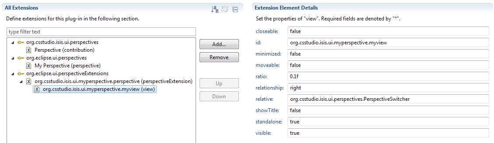
Next, using the ‘Add’ button we need to add org.eclipse.ui.views extension point
Right-click on the new item and select New->view; the new view should appear below the extension point
Set the class and id to the name and id of your View class respectively; it should look something like this:
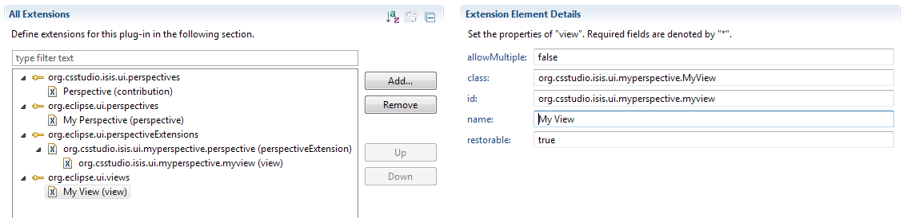
The XML in the plugin.xml for the View related stuff is:
<extension
point="org.eclipse.ui.perspectiveExtensions">
<perspectiveExtension
targetID="uk.ac.stfc.isis.ibex.ui.myperspective.perspective">
<view
closeable="false"
id="uk.ac.stfc.isis.ibex.ui.myperspective.myview"
minimized="false"
moveable="false"
ratio="0.1f"
relationship="right"
relative="uk.ac.stfc.isis.ibex.ui.perspectives.PerspectiveSwitcher"
showTitle="false"
standalone="true"
visible="true">
</view>
</perspectiveExtension>
</extension>
<extension
point="org.eclipse.ui.views">
<view
allowMultiple="false"
class="uk.ac.stfc.isis.ibex.ui.myperspective.MyView"
id="uk.ac.stfc.isis.ibex.ui.myperspective.myview"
name="My View"
restorable="true">
</view>
</extension>
Finally, the last step is to add the plug-in we created to uk.ac.stfc.isis.ibex.feature.base:
Open the feature.xml file in uk.ac.stfc.isis.ibex.feature.base and select the Plug-ins tab
Click the ‘Add’ button and select the new plug-in we created
Save everything and run the main GUI - hopefully, the new Perspective will appear
Adding a new icon
Grab a nice png icon which is appropriately sized (
24x24pixels) from somewhere like http://www.flaticon.com/Create a icons folder in the top-level of the plug-in
Drag the icon into it
Open the MANIFEST.MF file and select the Build tab
Tick the icons box under Binary Build to include the icons folder in the build
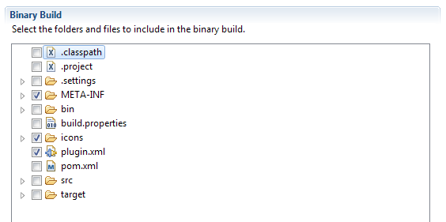
Open the Perspective class created earlier
Change the image method to return the new icon from the correct plug-in by changing the plug-in name and icon name, like so:
package uk.ac.stfc.isis.ibex.ui.myperspective;
import uk.ac.stfc.isis.ibex.ui.perspectives.BasePerspective;
import org.eclipse.swt.graphics.Image;
import org.eclipse.ui.IPageLayout;
import org.eclipse.wb.swt.ResourceManager;
public class Perspective extends BasePerspective {
public static final String ID = "uk.ac.stfc.isis.ibex.ui.myperspective.perspective"; //$NON-NLS-1$
@Override
public void createInitialLayout(IPageLayout layout) {
super.createInitialLayout(layout);
}
@Override
public String ID() {
return ID;
}
@Override
public String name() {
return "My Perspective";
}
@Override
public Image image() {
return ResourceManager.getPluginImage("uk.ac.stfc.isis.ibex.myperspective", "icons/myperspective.png");
}
}
Finally, start the GUI to check the new icon is shown
Adding a keyboard shortcut
In the plugin xml for your new perspective add the following:
<extension
point="org.eclipse.ui.bindings">
<key
commandId="uk.ac.stfc.isis.ibex.ui.perspectives.commands.SwitchPerspective"
schemeId="IBEX_key_scheme"
sequence="Alt+Shift+_char chosen earlier_">
<parameter
id="uk.ac.stfc.isis.ibex.ui.perspectives.commands.perspectiveID"
value="_your perspective id_">
</parameter>
</key>
</extension>
Run the GUI and hit ALT + SHIFT + chosen char and confirm that the perspective is switched to.
Setting the Perspective to be invisible
If you are creating the perspective for testing a new feature that you do not want displayed to the user by default then add the following code to your perspective class:
@Override
public boolean isVisibleDefault() {
return false;
}
by default this value is set to true and so perspectives are displayed.
To subsequently display the perspective run IBEX and go to the perspective window (CTRL + ALT + P) then enable the checkbox in ISIS Perspectives. On the next restart of the GUI your perspective should be displayed.
Troubleshooting
If the perspective is not being shown in the switcher at the side it may be Eclipse being silly or you may not be running the right product. Be sure to re-run by going selecting the client product, rather than using the drop-down (which will run the same product as you used previously) Finally, try clearing the workspace and resetting the target platform etc.